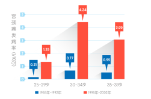

20多岁的女孩子们，我想对你说
20多岁的女孩子们，每天都有很多脑洞大开的想法。比如，嫁给自己的爱豆啦，在短期内达成小目标挣到一个亿啦，任何场合都自带女主光环啦等等。风华正茂的年纪，美好的人生才刚刚开始，照道理来讲，我们应该互相打气……可此时我却想对你说些有点丧的话：你有没有想过，20多岁也有可能会得宫颈癌……
不要觉得癌症离你很远，也不要觉得这是危言耸听，在中国，宫颈癌的发展正呈现出年轻化的趋势。有数据有真相。

我国一项1988~2002年关于宫颈癌发病率和死亡率肿瘤登记数据的分析显示，1998~2002年我国25~39岁女性的宫颈癌发病率比1988~1992年增加了5倍多！
同时，一份上海肿瘤医院1991~2001年的资料分析显示， 我国35岁以下宫颈癌的新发病例总体呈增加趋势。
不看不知道，一看吓一跳。可以说，形势是相当严峻了。为什么宫颈癌年轻化趋势会发展地如此迅猛？
宫颈癌年轻化趋势与HPV感染密切相关。研究发现，94.55%的宫颈癌患者中可以检测到HPV,而非宫颈癌者中仅23.64%可以检测到HPV。HPV感染者患宫颈癌的风险是未感染者的75.79倍。由于HPV主要通过性接触感染,性活跃的年轻女性HPV感染的阳性率相对较高，宫颈癌年轻化的趋势因而不可避免。

随着社会开放程度的增加，多个性伴侣、初次性生活＜16岁（青春期宫颈免疫不成熟，对致癌物质较为敏感）、性伴侣有生殖健康疾病等等，可能也与宫颈癌的年轻化有关。
宫颈癌从来不是中老年女性的专属疾病，面对来势汹汹的宫颈癌年轻化大潮，女孩子们务必提高警惕，千万不要掉以轻心哦~
Ref：
1.Lei T, Mao WM, Lei TH, et al. Incidence and mortality trend of cervical cancer in 11 cancer registries of China. Chin J Cancer Res. 2011 ;23(1):10-4.
2.Zhang MQ, Chen MZ. Analysis of 174 case with cervical cancer in woman under 35 years old. Zong Hua Fu Chan Ke Za Zhi, 2003, 38(11): 689-93.
3.Cai HB, Ding XH, Zhou YF, et al. Risk factors for cervical cancer in China: a case-control study. Eur J Gynaecol Oncol. 2008;29(1):72-5.